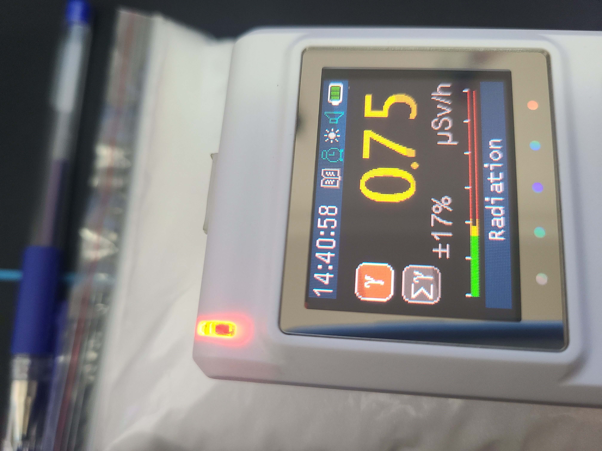
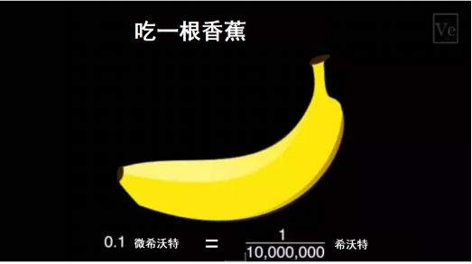
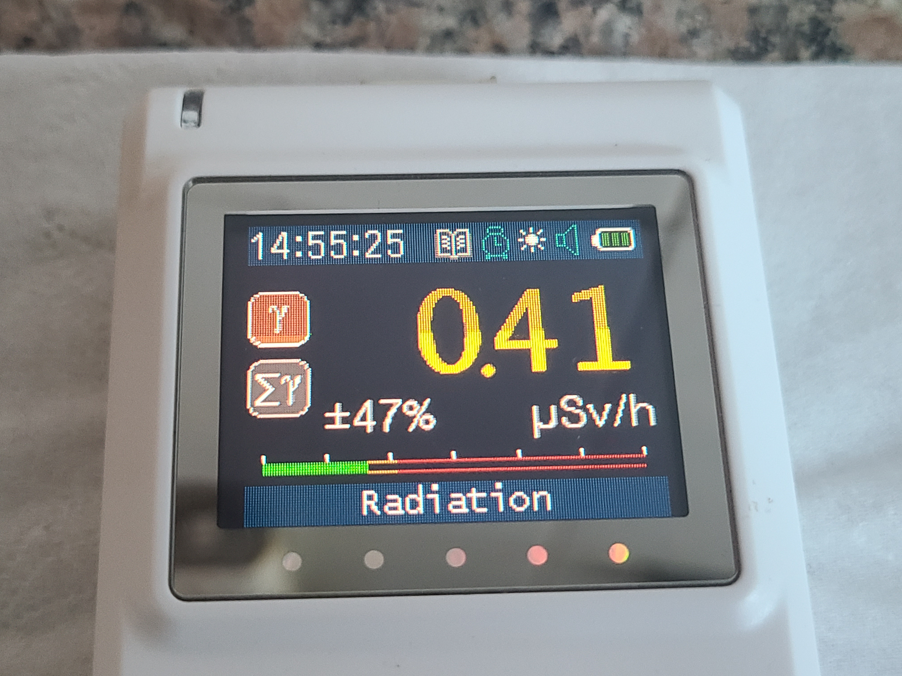
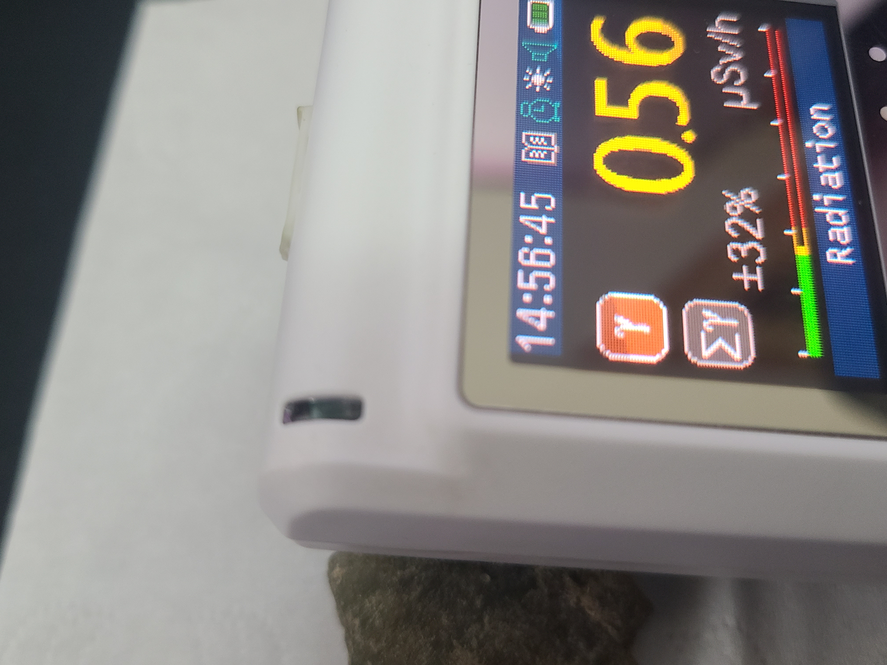
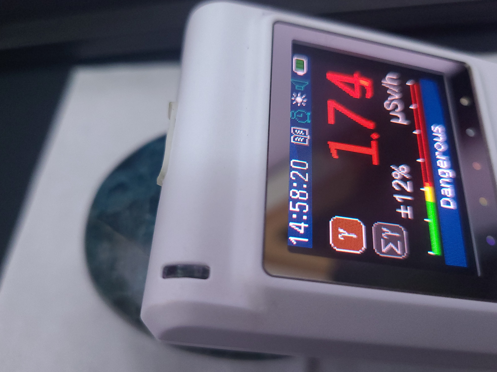
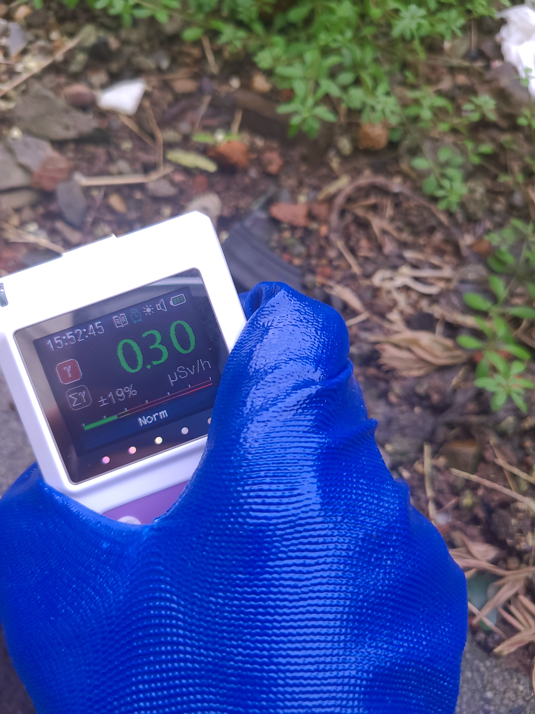
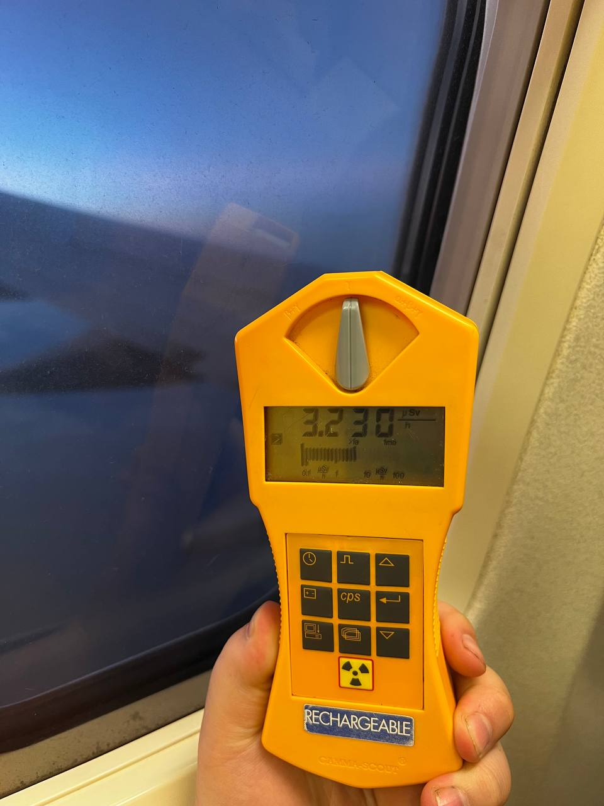
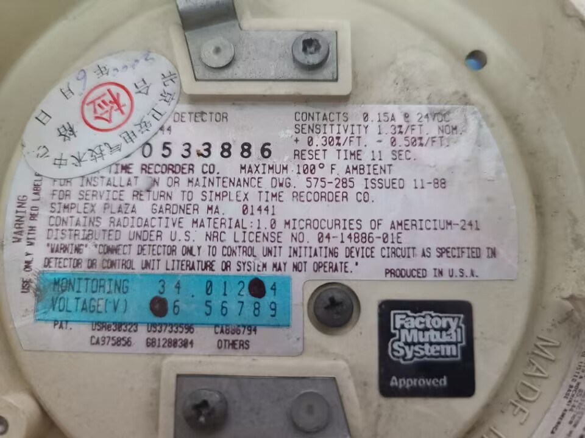
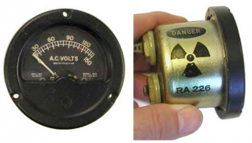

这大概是众所周知的了（笑）一些常见的列子:香蕉、低钠盐,各种钾盐等、含钾肥料、某些动物饲料等


图片展示的是一包500g氯化钾的放射性剂量（β）
有关链接列如一些花岗岩大理石可能会含有一定量的232Th、238U.据说花岗岩现在装修不让使用了就是因为放射性真伪性存疑？
矿石主要为含/富集U、Th、Ra的矿石如：磷灰石、重晶石、独居石等稀土矿物以及一系列名字带有铀、钍、镭的矿物.



从左到右分别为:花岗岩、绿磷灰石、蓝磷灰石（β）
雨天会导致放射性沉降.随着雨水被带下来的放射性核素主要为214Pb、214Bi因为这些核素都非常短命指短半衰期
没多久就很难使用盖革计数器检测到它们发出的射线了. ps：有微量的10Be也会被带下来但貌似不太好检测

我检测到的放射性异常,数值高于我所在地区的平均本底（0.13uSv）↑这里是一个YouTube视频如果您看到一个空白那大概是网络问题.
乘坐飞机时，乘客所受到的辐射主要来自于“宇宙射线”，这是一种具有相当大能量的带电粒子流，属于天然本底辐射。
联合国原子辐射效应科学委员会(United Nations Scientific Committee on the Effects of Atomic Radiation，UNSCEAR)计算过，
一次10小时飞行受到的电离辐射剂量约0.03mSv(具体的剂量和季节、地理位置、飞行高度都有关)。科学研究表明，高度每增加2千米，宇宙射线产生的辐射剂量就会增加一倍。距离地表10000米的高空上，宇宙射线的强度大约有0.006毫希沃特每小时6uSv/hr
，在这样的高空环境下飞行两个小时(大约是从北京到上海的距离)，接受的照射量大约为0.012毫希沃特。

坐飞机时的剂量 图:2014
电离式烟雾探测器探测含有一枚镅源在正常情况下，接触大量 Am-241 的可能性很小。在核武器试验的土壤、植物和水中发现了少量。一些 烟雾探测器 含有非常少量的 Am-241。只要探测器未被篡改并按照指示使用，烟雾探测器中的镅就不会对健康造成危害。处置烟雾探测器时，请遵循制造商的说明或咨询当地消防部门以获取说明。

历史上，镭用于医疗和设备以及飞机手表等仪表的被动照明。如果您发现此类设备，推荐联系当地环保局处理.

图片来源：橡树岭联合大学